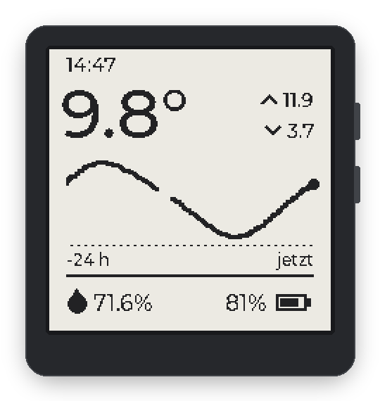
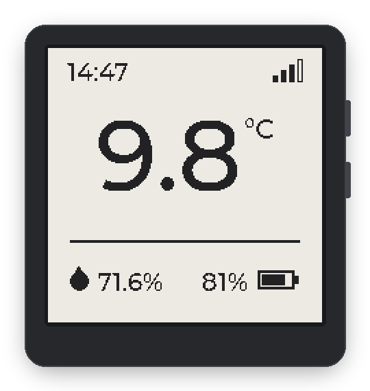
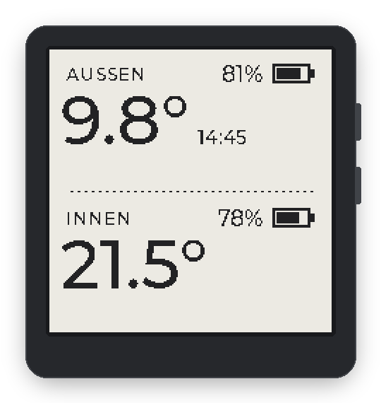
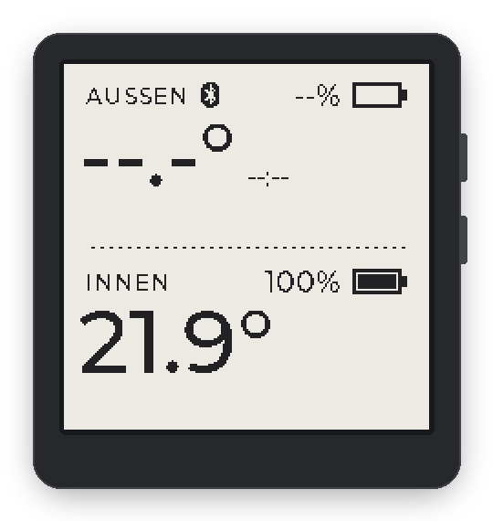
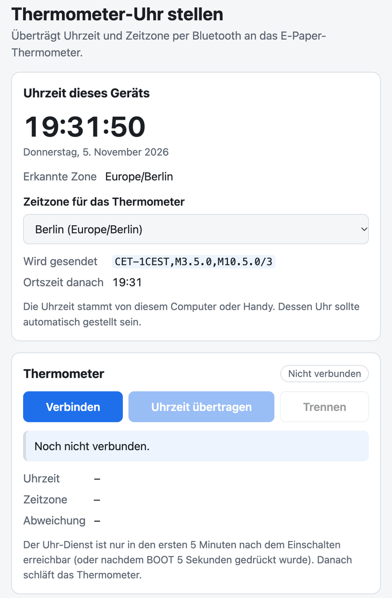

Govee BLE sensor
Decodes temperature, humidity, battery and signal of a GV5171 / H5171. Its address is remembered, so a reading usually arrives in about a second.
ESP32-S3 · e-paper · Bluetooth LE
Open-source firmware for the Waveshare ESP32-S3-ePaper-1.54. It shows a Govee BLE thermometer with a 24-hour trend and the room temperature, logs to a micro SD card and runs on the board's battery, waking for a second or two every five minutes.

Features
The Waveshare board already carries the panel, a real-time clock, an indoor sensor, a battery connection and a card slot. The firmware puts all of them to work, with no extra wiring.
Decodes temperature, humidity, battery and signal of a GV5171 / H5171. Its address is remembered, so a reading usually arrives in about a second.
Wakes 3 s after :00, :05, :10 …, scans, refreshes the panel and returns to deep sleep after roughly 2 s. The 80 MHz CPU naps in light sleep while the panel refreshes.
Each layout shows when the last reading arrived, so an old value is easy to spot. The on-board PCF85063A keeps UTC on battery; a POSIX time zone handles daylight saving.
High, low and a curve in 10-minute steps, kept in RTC memory through deep sleep. Gaps without readings stay empty.
The on-board SHTC3 measures the room temperature at every wake. The Dual layout shows it below the outdoor reading.
Reads the LiPo via ADC (GPIO4, 1:2 divider) at every wake, before the radio starts and pulls the voltage down. Shown in percent, logged in millivolts.
One row per hour on a FAT32 micro SD card, one file per month: outdoor and indoor values plus the board battery voltage. No card? It fails within milliseconds and retries next hour.
A single-file Web Bluetooth page writes time zone and UTC time over a small GATT service, then reads both back.
Layouts
Hold the BOOT button for a second to switch layouts. None of them shows the current time: the small HH:MM is when the last sensor reading arrived. The device labels are German: AUSSEN is outdoor, INNEN is indoor, jetzt is now.




--:-- until the clock is set, and a Bluetooth symbol (shown in every layout) while the clock service is open.A press wakes the board from deep sleep. Rotation and layout are stored in flash (NVS).
All screen images on this page are rendered from the firmware's own UI code (display_ui.c) on a computer, not photographed.
How it works
After a five-minute setup window the board settles into a simple rhythm, aligned to the wall clock.
Three seconds after every fifth minute, so the hourly log row never slips into the next cycle. If the drifting sleep timer wakes the board a little early, it does not wake again seconds later. While the clock is unset it keeps a steady 5-minute rhythm.
Indoor temperature from the SHTC3 and the board battery, before the radio starts and adds load.
The scan stops at the first advertisement from the remembered sensor address. Without one, the last values and their time stay on screen.
A partial e-paper refresh, with the CPU in automatic light sleep while it waits. Every 15th time a full refresh (~1.85 s) clears any ghosting.
The first cycle of each hour appends a CSV row to the SD card.
The panel controller sleeps, its supply is cut, the battery latch (GPIO17) is held, and the ESP32-S3 enters deep sleep.
EPD-Uhr advertised.FAT32, one file per month: /sdcard/YYYY-MM.csv. Rows need a set clock and a reading from the last 10 minutes. Unknown values stay empty.
local_time,utc_epoch,temperature_c,humidity_pct,sensor_battery_pct,rssi_dbm,indoor_temp_c,board_battery_mv
2026-11-05 14:00:12,1793883612,12.26,63.7,62,-86,21.46,3987 A month file with an older, shorter header is left as it is; new rows go to /sdcard/YYYY-MMb.csv.
Last values, the 24 h history and the previous frame for partial refreshes live in RTC memory: they survive deep sleep, but not a power cycle.
That assumes about 0.3–0.5 mA on average: roughly 1.5–2.5 s awake per wake, most of the energy in the BLE scan, on top of a deep-sleep floor of a few tens of µA plus the regulator, the battery divider (~10 µA) and an SD card if one is inserted.
Much shorter if the sensor is often out of range (every wake then scans the full 3 s) or the setup window is opened often.
The log's board_battery_mv column records the real discharge curve.
board_init() first exempts the battery latch (GPIO17), the panel rail (GPIO6) and the panel lines; power management starts after that.esp_timer on demand: no periodic timer keeps waking the CPU.Clock app
No app store, no account. One web page talks to the display over Web Bluetooth, sends your time zone and the exact time, then reads both back to verify.
Web Bluetooth needs a secure context. This site is served over HTTPS;
locally, http://localhost works too. The app's interface is in German.
| Characteristic | UUID | Format |
|---|---|---|
| service | 7a6b1000-3c2d-4e5f-9a8b-1c2d3e4f5a6b | |
| time | 7a6b1001-3c2d-4e5f-9a8b-1c2d3e4f5a6b | read/write, uint64 LE, Unix seconds UTC |
| time zone | 7a6b1002-3c2d-4e5f-9a8b-1c2d3e4f5a6b | read/write, POSIX TZ string, 1–48 ASCII bytes |
The page writes the time zone first (default Europe/Berlin,
CET-1CEST,M3.5.0,M10.5.0/3), then the UTC time at the start of a full second.
The RTC keeps UTC and runs from the battery even while the board is off.

Hardware
The board, the sensor, a battery and a USB-C cable. Display, clock, indoor sensor and card slot are already on the board.
GV5171, configurable). It doesn’t even have to be yours: the sensor broadcasts to anyone in range and the firmware only listens, so the neighbour’s balcony sensor works just as well. 😉scripts/gen_font.pyNo extra wiring: every connection is on the board. The full pin map is in the README.
Getting started
You need ESP-IDF v5.5.2 or newer. The setup script (written for macOS) installs it to ~/esp/esp-idf if it is missing.
Get the firmware, the clock app and the host tests.
git clone https://github.com/matsch82/waveshare-esp32-s3-ble-temp-viz.git
cd waveshare-esp32-s3-ble-temp-vizOne-time ESP-IDF install, about 1 GB of downloads.
./scripts/setup.shOr run idf.py build with the ESP-IDF environment sourced.
./scripts/build.shIn deep sleep the USB port is gone, and wakes are five minutes apart: hold BOOT for 5 s and release to open the setup window. The script waits up to about 5 minutes for the port and flashes with esptool.
./scripts/flash.shWaits up to about 5 minutes for a wake and follows the log with --no-reset, so the board is not restarted. The port reappears on every wake, every five minutes; start it shortly before one, or in the setup window.
./scripts/monitor.shGovee decoder, history buffer, date and BCD math, CSV rows, SHTC3 and battery math. No ESP toolchain needed.
./scripts/test_govee.shSensor name, wake interval, scan timeout, full-refresh cadence, setup window, SD log interval, BLE name and default time zone are in
idf.py menuconfig under E-paper display application. Then open the
clock app and set the time.